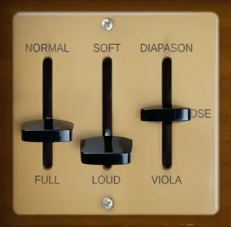
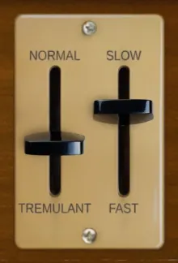
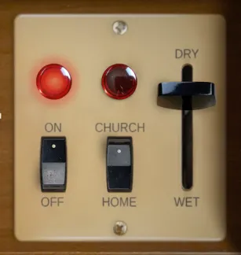
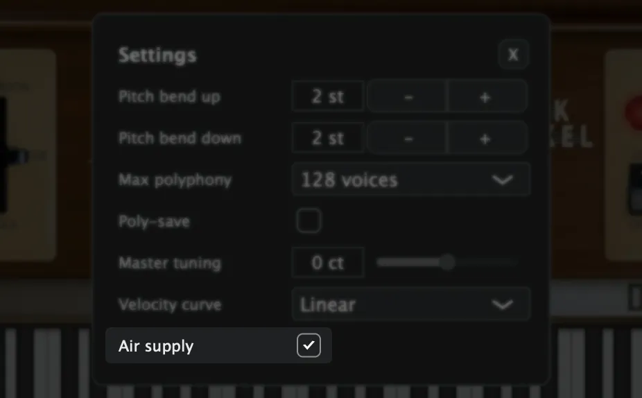

Included formats
- VST3 (macOS)
- AU (macOS)
- Standalone application (macOS)
- Decent Sampler (macOS, Windows and Linux)
The plugin version is currently released for macOS only. Windows and Linux versions are planned. Until then, the Decent Sampler version covers those platforms.
The plugin version
The plugin is a self-contained instrument, available as VST3, AU and Standalone. Samples, graphics and impulse responses are all embedded in the plugin itself, losslessly compressed, so there are no external files to install or locate. Only the samples for the selected preset are loaded into memory, and a fresh instance lets you choose which preset to load before anything is decoded.
The plugin has all the controls and features from the Decent Sampler version, including MIDI learn, the master volume fader with output meter, value readouts for the knobs and full DAW automation. On top of that, the plugin version adds:
- Drift wheels next to the pitch and modulation wheels, adding a subtle random pitch and volume drift to each voice.
- A velocity curve setting in the settings menu.
- An emulation of the shared air supply. See the section "Air supply".
The Decent Sampler version
This version of Elektrisk Salmesykkel is an instrument preset / sample library for Decent Sampler. If you're new to Decent Sampler, I recommend checking out this guide first.
Technical specification
| Sample rate | Bit depth | Channels | Number of files | File size | |
|---|---|---|---|---|---|
| Samples (Reeds) | 48 kHz | 24 bit | 2 (stereo) | 183 | 855.60 MB |
| Samples (Noise) | 48 kHz | 24 bit | 2 (stereo) | 366 | 63.60 MB |
| Impulse responses | 48 kHz | 24 bit | 2 (stereo) | 2 | 2.50 MB |
Instrument presets
This instrument includes 2 presets, the regular preset "ElektriskSalmesykkel" (best in most cases) and the looped preset "ElektriskSalmesykkel (Looped)". For the regular version, each sample are approximately 16 seconds long. For the looped version, to achieve the best possible loop point, some of the loops are short and some are longer. Some of the loops will however have some minor artifacts. For best audio quality, you should always use the regular version. And only if you have notes held for more than 16 seconds, use the the looped version.
User Interface
The user interface offers precise control over every aspect of the instrument and effects. Explore parameters to refine your sound, including control over the wind supply, reeds, tremulant, mechanical noise and reverb.
Wind and reed settings

- Normal / Full (Swell)
- Controlled by a knee lever on the original instrument and with the modulation wheel in the plugin
- Gradually open up the swell chambers
- Soft / Loud (Loudness)
- Determines how much air flows through the reeds
- Diapason / Close / Viola
- Diapason: Permanently opens the swell chamber for the diapason reeds
- Close: Both swell chambers is closed
- Viola: Permanently opens the swell chamber for the viola reeds
Tremulant

Tremulant varies the wind supply to the reeds. The controls enable you to adjust the tremulant with the desired depth and rate.
- Normal / Tremulant (Depth)
- Adjust the depth to introduce subtle or pronounced tremulant effect
- Slow / Fast (Rate)
- Determines the speed of the tremulant effect
Noise
- Silent / Noisy
- The amount of mechanical noise from the keys when pressed down and released
Reverb

The reverb are achieved using carefully crafted impulse responses of a Chase Bliss Audio & Meris CXM 1978 reverb pedal. The short reverb, evoking the intimacy of a small room (home), and the long reverb (church), enveloping your sound in the vastness of a spacious environment.
- On / Off
- Turns the reverb on and off
- Church / Home
- Switches between a long/big room (church) reverb and a short/small room (home) reverb
- Dry / Wet
- Mix between direct signal (dry) and reverb signal (wet)
Air supply (plugin version only)

The original Yamaha L-20D has a motor driven fan that supplies air to all the reeds. When many notes are played at once, each reed gets a smaller share of the air. The plugin emulates this behavior: the more notes you hold, the lower the volume, the softer the top end and the slower the attack of each note. The air recovers quickly when notes are released, just like the real blower. The emulation only affects the reed samples, not the mechanical key noises, and it can be turned on or off in the settings menu.
Release notes
Version 2.1.02026-08-01
The changes in this release apply to the plugin version only. The DecentSampler version is unchanged.
- Added a translucent overlay graphic on top of the interface.
- Keys that are hovered or held on the keyboard are now shaded in a neutral way instead of turning yellow:
- White keys turn darker.
- Black keys turn brighter.
- The computer keyboard keeps playing notes even while you adjust a control with the mouse.
Version 2.0.02026-07-19
- Added a plugin version. See the section "The plugin version".
- Added an air supply emulation to the plugin version. See the section "Air supply".
- Standardized the UI values for the controllers.
- Fixed the default value for the tremulant depth.
- The indicator lights now use the off image as default, matching the default state.
Version 1.2.02025-01-04
- Removed amplitude envelope for one shot samples
Version 1.1.02024-02-15
- Improved crossfades for loop points
Version 1.0.02024-02-11
- First version released
About this repository
This repository contains the source for both the Decent Sampler library (the DecentSampler folder) and the plugin version. The plugin is a thin wrapper around the shared Dehli Musikk sampler engine, and a converter translates the Decent Sampler library into the engine's native preset format at build time. The audio files are not part of this repository, since the samples are a paid product. The full version is available from store.dehlimusikk.no.